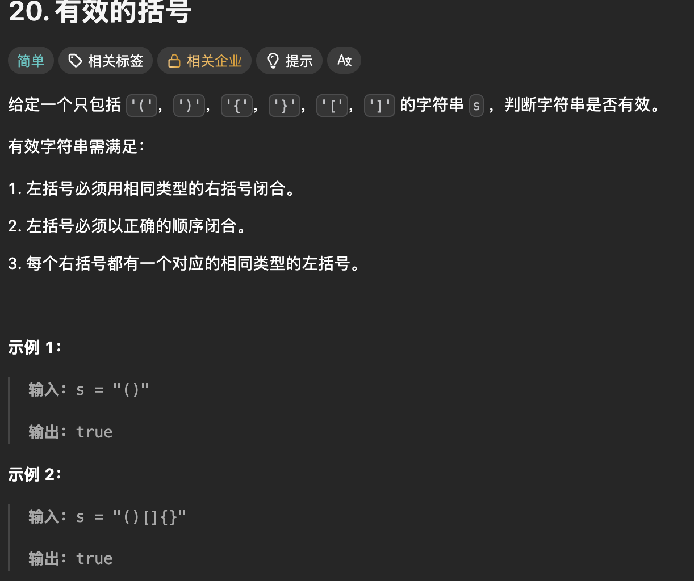

栈的顺序表实现与 LeetCode 20 有效的括号：从扩容到配对判断
栈的顺序表实现与 LeetCode 20 有效的括号：从扩容到配对判断
我正在学习栈和队列。这篇先记录已经写出来的顺序栈、test.c 中的练习，以及用这个栈做的 LeetCode 20「有效的括号」。本文保留我当时的原代码，包括注释掉的练习和函数命名不一致的地方；后面单独说明问题与最小修正，便于复习时看到真实的思考过程。这里没有队列的实现代码，所以不把栈误写成队列。
一、先认清这个栈：a、top、capacity
ST 用动态数组保存数据。a 指向数组起始位置；capacity 表示已经申请到的元素个数；top 表示目前已有的有效元素个数，同时也是下一个元素应该写入的下标。这样空栈是 top == 0，栈顶下标是 top - 1，有效范围是 a[0] 到 a[top - 1]。
| 状态 | top |
capacity |
下一次入栈位置 |
|---|---|---|---|
| 刚初始化 | 0 | 0 | 先申请空间，再写 a[0] |
| 压入 1、2、3 | 3 | 4 | a[3] |
| 四个位置都用完 | 4 | 4 | 必须先扩容 |
这里选的是“top 指向下一个空位”的写法。有的教材让 top 指向当前栈顶，初始值便可能是 -1；两种约定都能用，但入栈、出栈、判空、取栈顶必须贯彻同一种约定。
Stack.h：完整原代码
#pragma once
#include <stdio.h>
#include <stdlib.h>
#include <assert.h>
#include <stdbool.h>
typedef int SLDataType;
typedef struct Stack{
SLDataType* a;
int top;
int capacity;
}ST;
//初始化和销毁
void SLInit(ST* pst);
void STDestroy(ST* pst);
//入栈和出栈
void SLPush(ST* pst,SLDataType x);
void SLPop(ST* pst);
//取栈顶数据
SLDataType STTop(ST* pst);
//判空
bool STEmpty(ST* pst);
//获取数据个数
int STsize(ST * size);
typedef int SLDataType; 把栈的数据类型暂定为 int，所以 a 是 int 数组。typedef struct Stack { ... } ST; 让后续函数可以用 ST* 表示栈地址。#pragma once 防止头文件在一次编译中重复展开；四个标准头文件分别提供 printf/perror、malloc/realloc/free、assert 和 bool。
头文件负责声明，Stack.c 负责定义，test.c 负责调用。三处的函数名和参数类型必须一致；参数变量叫 size 还是 pst 不影响链接，但 STsize(ST * size) 中的 size 实际上也是一个栈指针，叫 pst 更不容易误解。
二、逐个看 Stack.c 的功能和用法
Stack.c：完整原代码
#include "Stack.h"
void SLInit(ST* pst){
assert(pst);
pst->a=NULL;
pst->top=0;
pst->capacity=0;
}
void SLDestroy(ST* pst){
assert(pst);
free(pst->a);
pst->top=pst->capacity=0;
}
void SLPush(ST* pst,SLDataType x){
assert(pst);
//扩容
if(pst->top==pst->capacity){
int newcapacity=pst->capacity==0?4:pst->capacity*2;
SLDataType* tmp=(SLDataType*)realloc(pst->a,sizeof(SLDataType)*newcapacity);
if(tmp==NULL){
perror("realloc fail");
return;
}
pst->a=tmp;
pst->capacity=newcapacity;
}
pst->a[pst->top]=x;
pst->top++;
}
void STPop(ST* pst){
assert(pst);
assert(pst->top>0);
pst->top--;
}
SLDataType STTop(ST* pst){
assert(pst);
assert(pst->top>0);
return pst->a[pst->top-1];
}
bool STEmpty(ST* pst){
assert(pst);
return pst->top==0;
}
int STsize(ST* pst){
assert(pst);
return pst->top;
}
SLInit：初始化
调用 SLInit(&s) 时，&s 是局部变量 s 的地址，函数通过 pst 修改同一个栈。assert(pst) 要求这个地址不为 NULL。随后把数组指针设为 NULL，把元素数和容量都设为 0。初始化后，还没有申请数组内存；第一次 SLPush 才会申请。先初始化再使用，才不会拿未初始化的野指针去 realloc 或 free。
SLPush：最需要搞懂的动态扩容
入栈的顺序是：检查栈指针 → 判断空间是否已满 → 必要时申请更大的数组 → 在 a[top] 写入数据 → top++。绝不能先写入再判断是否扩容。
初始：a = NULL，top = 0，capacity = 0
压入 10：0 == 0，扩到 4；写 a[0] = 10；top 变 1
再压 20、30、40：依次写 a[1]、a[2]、a[3]；top 变 4
压入 50：4 == 4，扩到 8；写 a[4] = 50；top 变 5
if (pst->top == pst->capacity) 的意思是“有效元素数等于可存元素数”，即没有空位。pst->capacity == 0 ? 4 : pst->capacity * 2 在第一次分配时取 4，以后每次翻倍。增长策略让多数入栈只需一次写入；偶尔扩容会复制旧元素，单次最坏 O(n)，连续入栈的均摊时间是 O(1)。
realloc(pst->a, sizeof(SLDataType) * newcapacity) 的第二个参数是字节数，所以必须乘 sizeof(SLDataType)。这里的 newcapacity 是“多少个元素”，并非“多少字节”。realloc(NULL, n) 相当于首次申请内存。已有内存时，它可能在原地址扩，也可能搬到新地址；旧数据会保留到新申请的空间中，但成功后只应使用返回的新指针。
为什么先接到 tmp，再写 pst->a = tmp？因为 realloc 失败会返回 NULL，而原内存仍归原指针所有。如果直接写 pst->a = realloc(...)，失败时就丢了原地址，内存泄漏。当前写法失败后调用 perror 并 return，top 和 capacity 没变，旧栈仍可使用；但 SLPush 返回 void，调用者无法从返回值判断这次入栈是否成功。后面的 LeetCode 解法依赖压栈成功，内存不足时可能错误地判断括号。若要把这套栈用于需要可靠错误处理的程序，应让入栈函数返回成功/失败，或采用明确的退出策略。还有一点：capacity * 2 和 sizeof(...) * newcapacity 在极大输入下应检查整数溢出，本练习代码没有做这个防护。
扩容成功后先更新 a 和 capacity，再执行 pst->a[pst->top] = x; pst->top++;。写入时 top 仍是下一个空位的下标；自增后它又恢复为有效元素个数。这里不能先 top++ 再用 a[top]，否则第一次入栈就会跳过 a[0]。
SLDestroy：销毁
free(pst->a) 归还动态数组，free(NULL) 也是安全的。之后把 top、capacity 清零。当前代码没有把 pst->a 设回 NULL，因此留下悬空指针：销毁后若再次调用 SLDestroy，或者不重新初始化就入栈，都可能出错。最小修正是在 free 后补 pst->a = NULL;。不过本文原代码保持不动，提醒自己按现状只能销毁一次、销毁后不再使用。
STPop、STTop、STEmpty、STsize
STPop(&s)只让top--，逻辑上删掉栈顶，不必清空数组里的旧值；下一次入栈会覆盖它。assert(pst->top > 0)表示空栈不能出栈。函数定义是STPop，头文件却声明成SLPop，必须统一。STTop(&s)返回a[top - 1]，但不删除元素；所以通常先读栈顶，再调用STPop。空栈时不能读取，函数用断言阻止这种调用。STEmpty(&s)在top == 0时返回true。遍历出栈时可以写while (!STEmpty(&s))。STsize(&s)返回有效元素个数top，并非容量。头文件中参数名size没有改变函数类型，但建议改成pst便于阅读。
assert 只适合检查“调用者本不该犯的错误”。开启 NDEBUG 时断言可能被编译掉，所以不能把它当成正式的空栈错误处理。调用 STTop/STPop 前仍要确保非空。
三、test.c：完整原代码与实际执行顺序
#include<stdio.h>
#include<stdlib.h>
//
//int main()
//{
// // 原地扩容
// // 异地扩容
// int* p1 = (int*)malloc(8);
// printf("%p\n", p1);
//
// int* p2 = (int*)realloc(p1, 80);
// printf("%p\n", p2);
//
// free(p2);
//
//
// int i = 0;
// int ret1 = ++i;
//
// int ret2 = i++;
//
//
//
// return 0;
//}
#include"Stack.h"
//int main()
//{
// ST s;
// STInit(&s);
// STPush(&s, 1);
// STPush(&s, 2);
// STPush(&s, 3);
// STPush(&s, 4);
//
// printf("%d\n", STTop(&s));
// STPop(&s);
// printf("%d\n", STTop(&s));
// STPop(&s);
// STPop(&s);
// STPop(&s);
// STPop(&s);
//
// //printf("%d\n", STTop(&s));
//
// STDestroy(&s);
//
// return 0;
//}
int main()
{
// 入栈：1 2 3 4
// 出栈：4 3 2 1 / 2 4 3 1
ST s;
STInit(&s);
STPush(&s, 1);
STPush(&s, 2);
printf("%d ", STTop(&s));
STPop(&s);
STPush(&s, 3);
STPush(&s, 4);
while (!STEmpty(&s))
{
printf("%d ", STTop(&s));
STPop(&s);
}
STDestroy(&s);
}
这份文件有三段练习。第一段已注释的 malloc/realloc 用来观察原地扩容和异地扩容：两个地址是否相同都可能发生，不能预设一定原地扩。它没有检查分配失败，也没有展示失败时原指针仍有效的处理方式，所以更适合作概念练习。++i 是先自增再作为表达式的值，i++ 是先取旧值再自增；从 i = 0 开始，ret1 = 1，随后 ret2 = 1、i = 2。
第二段已注释的 main 演示连续入栈、读栈顶、出栈。其中入了 4 个元素却调用了 5 次 STPop；若解除注释并按一致的函数名编译，最后一次会对空栈出栈，触发断言。它还提醒我们：STTop 不等于出栈，读完若想删除仍须 STPop。
当前实际的 main 先入栈 1、2，输出并弹出 2；再入栈 3、4，循环输出并弹出 4、3、1。所以按预期顺序输出是 2 4 3 1，这是一种合法的栈出栈序列。4 3 2 1 对应四个元素都先入栈再连续出栈，是另一种操作顺序。循环判空避免了对空栈调用 STTop，最后 STDestroy 负责释放数组。
这份原代码为什么目前编译不过？
我用 C11 的编译检查核对了磁盘上的原文件，test.c 的 STInit、STPush、STPop 找不到相应声明。名字对应关系如下：
| 调用处 | 头文件声明 | Stack.c 定义 |
最小统一方式 |
|---|---|---|---|
STInit |
SLInit |
SLInit |
调用处改成 SLInit |
STPush |
SLPush |
SLPush |
调用处改成 SLPush |
STPop |
SLPop |
STPop |
头文件改声明为 STPop |
STDestroy |
STDestroy |
SLDestroy |
定义改名为 STDestroy，或声明/调用统一为 SLDestroy |
还要注意，注释掉的第二段 main 也使用 STInit/STPush，将来解除注释时同样需要统一；程序只能保留一个有效的 main。上表只是说明如何对齐名称，没有修改下面保存的原文件。即使先解决当前的“未声明函数”，链接阶段仍会因 STDestroy 的定义名不一致而失败。
四、LeetCode 20「有效的括号」
题目截图与要求

题目给一个只包含 ()、[]、{} 的字符串，判断每个左括号能否按类型相同、顺序正确的规则闭合。空字符串也符合“没有不匹配括号”的条件，结果为 true。截图中的 "()" 和 "()[]{}" 都返回 true。题目保证只有这六种字符，因此下面代码中的 else 可把非左括号视为右括号；若用于普通文本，就必须另外判断字符是否真是 )、]、}。
我的 LeetCode 代码（保留原写法）
下面是我最初发来的实现，整理了换行与缩进，函数名和判断逻辑照原样保留。它同时包含栈结构、栈操作和 isValid，便于单独复盘题解。若和上面的本地三个文件一起编译，会重复定义栈函数；它是另一份题解代码展示，不是要直接拼进同一个 C 工程。这份题解原文没有写标准库头文件，若单独编译，需要补上 assert.h、stdbool.h、stdio.h、stdlib.h；这里的 SLDataType 是 int，可以容纳这些 ASCII 括号字符；STTop 返回后再赋给 char 用于比较。
typedef int SLDataType;
typedef struct Stack{
SLDataType* a;
int top;
int capacity;
}ST;
void SLInit(ST* pst){
assert(pst);
pst->a=NULL;
pst->top=0;
pst->capacity=0;
}
void SLDestroy(ST* pst){
assert(pst);
free(pst->a);
pst->top=pst->capacity=0;
}
void SLPush(ST* pst,SLDataType x){
assert(pst);
//扩容
if(pst->top==pst->capacity){
int newcapacity=pst->capacity==0?4:pst->capacity*2;
SLDataType* tmp=(SLDataType*)realloc(pst->a,sizeof(SLDataType)*newcapacity);
if(tmp==NULL){
perror("realloc fail");
return;
}
pst->a=tmp;
pst->capacity=newcapacity;
}
pst->a[pst->top]=x;
pst->top++;
}
void STPop(ST* pst){
assert(pst);
assert(pst->top>0);
pst->top--;
}
SLDataType STTop(ST* pst){
assert(pst);
assert(pst->top>0);
return pst->a[pst->top-1];
}
bool STEmpty(ST* pst){
assert(pst);
return pst->top==0;
}
int STsize(ST* pst){
assert(pst);
return pst->top;
}
bool isValid(char* s) {
ST st;
SLInit(&st);
while(*s){
if(*s=='('||*s=='['||*s=='{'){
SLPush(&st,*s);
}
else{
if(STEmpty(&st)){
SLDestroy(&st);
return false;
}
char top=STTop(&st);
STPop(&st);
if((top=='(' && *s!=')') ||
(top=='[' && *s!=']') ||
(top=='{' && *s!='}')){
SLDestroy(&st);
return false;
}
}
++s;
}
bool ret = STEmpty(&st);
SLDestroy(&st);
return ret;
}
为什么必须用栈？
遇到左括号就先记住，遇到右括号时必须匹配最近一个还未闭合的左括号。这正是栈“后进先出”：最后入栈的左括号，最先接受检查。比如 ([{}])：依次压入 (、[、{，随后 } 配 {，] 配 [，) 配 (。如果只统计每类括号数量，([)] 虽然数量相等也会被误判为合法；用栈会发现读到 ) 时栈顶是 [，当场返回 false。
isValid 的执行过程
ST st; SLInit(&st);创建并初始化一个空栈，用它只保存尚未配对的左括号。while (*s)逐字符扫描，直到遇到字符串结尾的\0。++s让指针移到下一个字符；本题的s是 LeetCode 传入的字符串首地址。- 如果是
(、[、{，SLPush(&st, *s)入栈，等待未来的右括号。 - 否则遇到右括号时，先用
STEmpty判断是否已有可匹配的左括号。没有就先SLDestroy再返回false，例如输入")("在第一个字符就失败。 - 非空时取出
top = STTop(&st)，然后STPop(&st)。三个条件分别检查(对)、[对]、{对}；任一对不匹配，就销毁栈并返回false。 - 字符全部扫描完后还要检查
STEmpty(&st)。例如"(("没出现错误右括号，但仍有未闭合左括号，应返回false。先把判断结果存进ret，销毁栈后再返回它。
| 输入 | 关键一步 | 结果 |
|---|---|---|
"()[]{}" |
每个右括号都配当前栈顶，最后为空 | true |
"([{}])" |
闭合顺序 {、[、( |
true |
"([)]" |
读到 ) 时栈顶是 [ |
false |
"(]" |
( 与 ] 类型不一致 |
false |
"(()" |
扫描完还有 ( 留在栈里 |
false |
")(" |
第一个右括号到来时栈为空 | false |
题解的易错点
- 错误写法：只比较左右括号的数量。 为什么错：数量相同不保证顺序；
([)]就是反例。正确写法：右括号只与当前栈顶的左括号比较。以后判断：题目出现“最近一个未匹配项”时，先想栈。 - 错误写法：读到右括号先调用
STTop。 为什么错：输入从右括号开始时会在空栈取栈顶，触发断言。正确写法：先STEmpty，再取栈顶。以后判断：任何需要栈顶的操作，先证明栈非空。 - 错误写法：扫描结束直接返回
true。 为什么错："(("没遇到错误右括号，但左括号没闭合。正确写法：结果取决于最终STEmpty(&st)。 - 错误写法：匹配失败直接返回。 为什么错：
st.a可能已申请内存，会泄漏。正确写法：每条提前返回路径先销毁栈；正常路径也要销毁。 - 当前实现的额外限制：
SLPush分配失败只是打印错误并返回void，isValid不知道压栈失败，可能给出错误结果；SLDestroy释放后未清空a。这两点是栈接口本身的问题，不是配对思路的问题。
扫描一次字符串，设长度为 n：时间 O(n)，最坏情况下所有字符都是左括号，辅助空间 O(n)。这里的栈按 4、8、16……扩容，均摊入栈仍是常数时间。若空间分配失败，当前实现并不保证正确返回值；复杂度分析默认分配成功。
五、复习时记住
栈的关键约定是 top 表示“下一个空位”，因此入栈写 a[top] 后 top++，出栈只需 top--，取栈顶用 a[top - 1]。SLPush 的关键是先判断是否满、用临时指针接 realloc、成功后更新地址和容量、最后写入并自增。括号题的关键是右括号只配最近的左括号，而且必须处理空栈、类型不符、扫描完仍有剩余三类情况。多文件练习还提醒我：头文件声明、实现定义、调用名称要逐个对齐，不能只看算法思路就以为程序已经能编译。